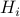
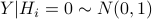
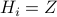
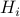
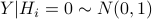
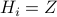

Blogs
This page is about some research that I'm interested in, as well as my thoughts on it. The topics are diverse, and some of them may be incorrect or naive. (update slowly)
some questions I am thinking of
BH procedure controls FDR for Two-sided multi-gaussian under any dependence structure.
But I think it's wrong.
e-BH procedure hardly beats BY procedure.
I wonder, if there's any connection between the multiple hypothesis testing framework and causal inference.
You see, in causal inference, we have  : binary treatment indicator, and the potential outcome Y(0), Y(1). In multiple hypothesis testing, we also have binary indicator: hypothesis  being null or non-null, and its corresponding outcome: , let's say this is Y(0) then we also have Y(1), and we also rewrite  to denote the binary indicator.
: binary treatment indicator, and the potential outcome Y(0), Y(1). In multiple hypothesis testing, we also have binary indicator: hypothesis  being null or non-null, and its corresponding outcome: , let's say this is Y(0) then we also have Y(1), and we also rewrite  to denote the binary indicator.